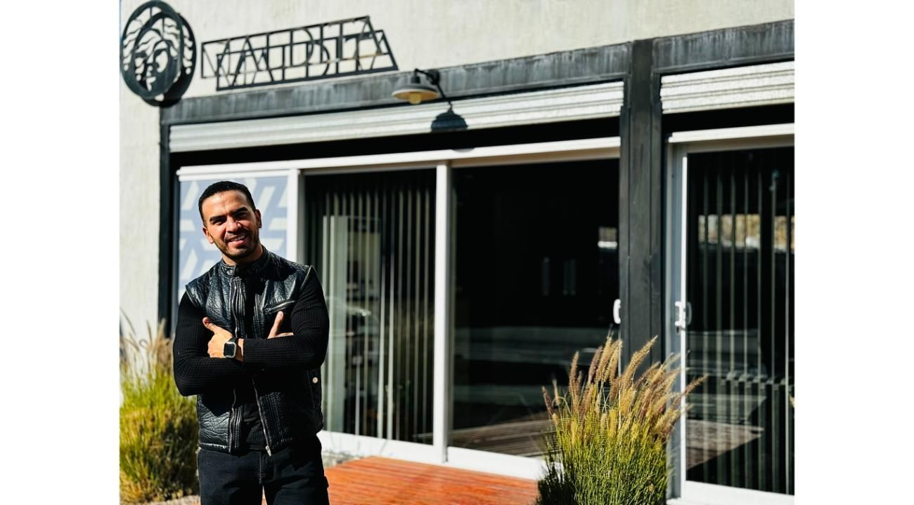

Mario Lluvero, el hombre detrás de “Maldita Peluquerías”

Mario Lluvero es un emprendedor mendocino, nacido en el departamento de San Martín y criado en Maipú. A sus 34 años, se ha convertido en el rostro y motor de Maldita Peluquerías, un emprendimiento que inició en 2020 en una época más que desafiante.
En medio de la pandemia de coronavirus, Mario decidió apostar por el crecimiento y abrió su primer local frente al centro comercial Palmares Open Mall. “En ese momento, trabajaba desde casa y, los fines de semana, cuando mi DNI me habilitaba, realizaba actividades al aire libre. Solía subir el Cerro Arco, y fue en uno de esos días cuando decidí comenzar el proyecto de la peluquería, algo que hasta entonces había sido sólo un hobby”, cuenta Mario.
Desde su apertura, Maldita Peluquerías ha tenido un impacto notable no solo en la provincia de Mendoza, sino también a nivel nacional e internacional. Esto se debe a la calidad del trabajo de su equipo profesional y al alto compromiso hacia las mujeres que caracteriza a la empresa. Hay mujeres de países limítrofes, como Chile o Brasil, que aprovechan su descanso turístico por Mendoza para sacar un turno en Maldita.
Según cuenta Mario, el nombre “Maldita” se debe al curioso hecho de que en muchas películas adaptadas de famosos cuentos de hadas, las villanas suelen tener un maquillaje y cabello perfecto, incluso mucho más que la princesa o heroína.
Grandes marcas como L’Oréal y Olaplex también eligieron Maldita para lanzar nuevos productos y realizar cursos de perfeccionamiento. En octubre de 2022, la peluquería ganó mención en medios nacionales tras una campaña que ofrecía servicios gratuitos a mujeres que presentaran una mamografía reciente, en un esfuerzo por fomentar la detección temprana del cáncer de mama. Esta iniciativa se hizo viral, destacando el lado humano de Maldita.
En octubre de 2023, el proyecto de "Marito", como le llaman sus amigos, familiares y clientas, cobró aún más notoriedad al ofrecer asesoramiento capilar a mujeres que necesitaban diagnóstico antes, durante y después de la quimioterapia debido al cáncer de mama.
A pesar de que todo indicaba que Mario seguiría una carrera más “numérica”, habiendo estudiado Comercio Internacional y Contabilidad, y trabajado en administración de empresas, decidió seguir su pasión por la peluquería. “Fui Gerente Administrativo de una empresa constructora, asesor financiero en una empresa de industria plástica, y finalmente trabajé en el sector comercial de una empresa de telecomunicaciones”, relata Mario. “Trabajé 10 años en el sector privado antes de emprender y también administro un pequeño emprendimiento agrícola familiar”.
Mario cree que su formación le ha permitido ver la peluquería como un negocio integral. “Mi formación me sirvió para ver la peluquería como un negocio integral, buscando siempre profesionalizarlo en todos sus aspectos: desde lo técnico como estilista, hasta su imagen, marketing y creación de un concepto de marca”, explica.
La marca Maldita no lleva el nombre personal de nadie, ya que busca asociarse con la calidad en la atención, el uso de productos de primeras marcas a nivel internacional, la capacitación constante y la excelencia en el servicio. Mario reconoce con humildad: “El éxito de Maldita no es sólo mérito mío, sino también del excelente equipo que me rodea y acompaña en cada paso”.